01
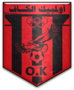
Olympique du Kef
The hometown club and the first chapter of the published chronology: where the coach from El Kef began his professional path.
Twelve documented chapters across five countries, from El Kef to the Gulf. Each chapter lists the role, what happened and the sources to check it.

The hometown club and the first chapter of the published chronology: where the coach from El Kef began his professional path.
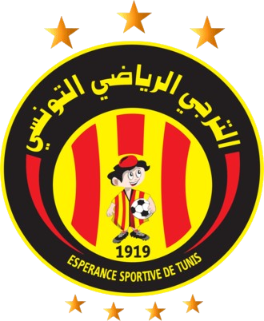
Coached the Olympic squad of one of Africa's most decorated clubs, an early step in a demanding, high-pressure environment.
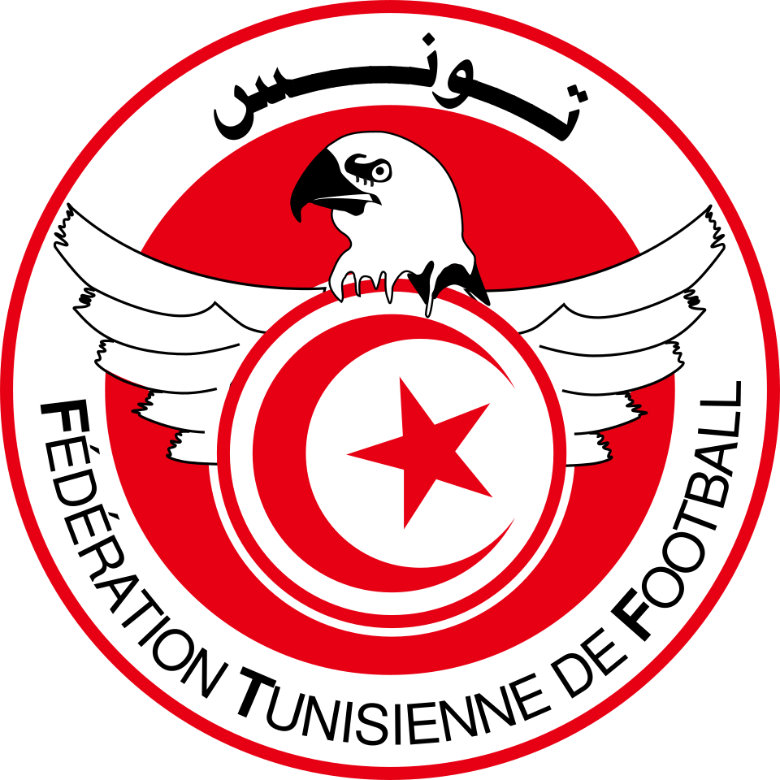
A season in the national youth setup, working on the development of the next generation of Tunisian players.
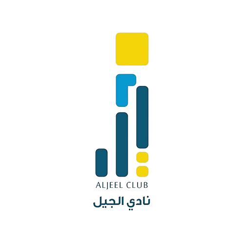
The move into Saudi football. A Saudi press report describes him taking over after the dismissal of compatriot Lotfi Kadri, whom he had assisted, and working on fitness and tactics ahead of a first-division fixture.
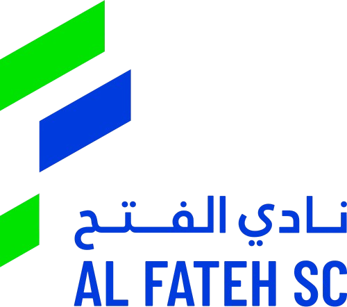
The most decorated chapter: assistant coach as Al Fateh won the Saudi league title and the first Saudi Super Cup, a landmark for the club from Al Ahsa.
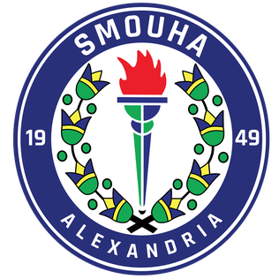
An Egyptian Premier League experience in Alexandria, adding a new football culture to a path already built in Tunisia and the Gulf.
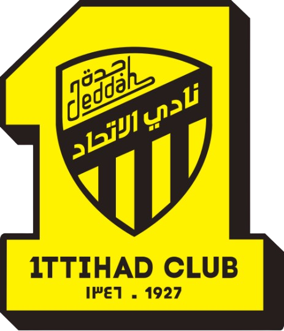
A major first-team chapter at one of Saudi Arabia's biggest clubs. He led the 2015 pre-season preparation and became a popular figure with the fans, who nicknamed him 'the loyal'. A Saudi disciplinary decision in October 2014 shows him active on the touchline as assistant.
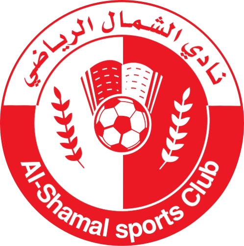
First head-coach role in the Qatar Stars League, one of the most competitive championships in the region.
A return to Jeddah. In May 2017 he spoke publicly, as a former assistant, about the club's transfer and contract situations, always defending the institution.
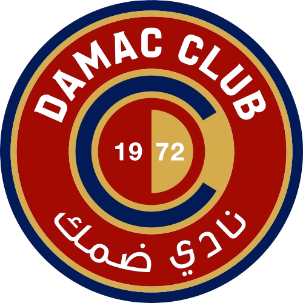
Damac's own history sources list him as caretaker and then head coach in the First Division; some dates differ between sources and should be confirmed with the coach.
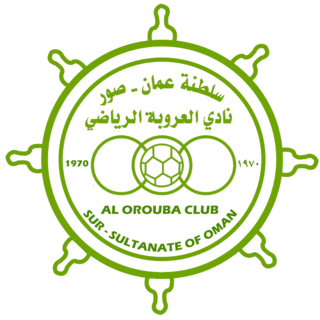
An Omani Professional League chapter with Sur's Al Orouba, his fifth country in football after Tunisia, Saudi Arabia, Egypt and Qatar.
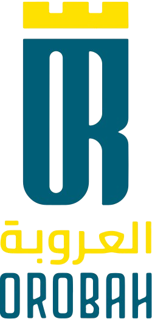
Announced by the club on social media to lead the team for the rest of the first-division season, then renewed by the board for another season, two consecutive campaigns in total.
Published biography material records football analysis for Nessma, M Tunisia, Tunisian national radio and Mix FM Saudi Arabia, plus sports writing. The coach also publishes videos on his own YouTube channel.
WATCH THE VIDEOS ↗Where football meets method.
Elite Sports Innovation Holding builds tools and training based on scientific foundations, for coaches, former players and anyone working in player development.
A digital platform for coaches.
Presented to the press in Tunisia as the country's first innovative sports platform, it covers tactical analysis, exercises, training-session planning and performance analysis. Bayrem Mokhtari ran a live demonstration of it at the press conference.
Coaches can draw formations, build reports and print teaching sheets, and a digital library holds books in PDF and training videos.
READ THE PRESS COVERAGE ↗Write directly for coaching, analysis, media or partnerships.